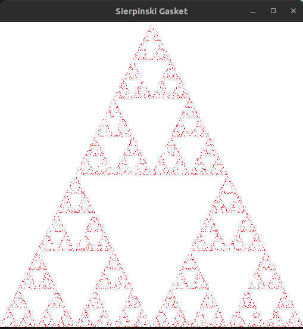
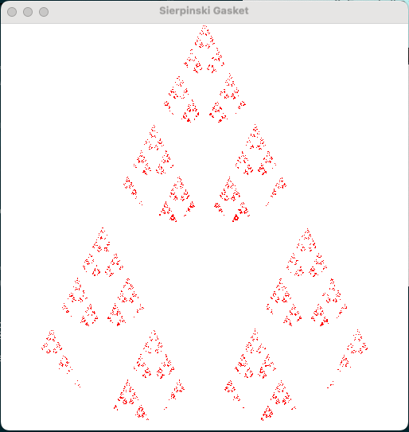
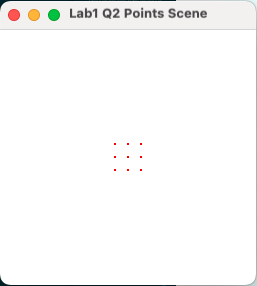
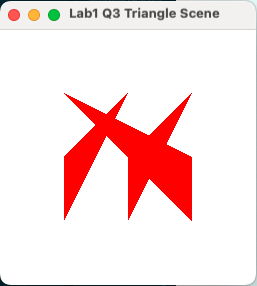

Objectives:
In this lab's exercises, you will- need to download and extract the libraries and OpenGL examples associated with the recommended text,
- learn how to compile and execute some 2D examples,
- make some small changes to the code of these examples,
- build an "absolutely minimal scene editor" (you won't believe how minimal!)
Downloading and extracting
- Create a directory (folder) in your home directory (e.g.,
cits3003) to keep all your work for this unit. - Download
cits3003_labs.zipto this directory. - Extract the files from the zip file, either via the right-click menu in the folder or use this terminal command if you use Linux:
unzip cits3003_labs.zip
- Create a directory (folder) in your home directory (e.g.,
Building and executing
- Refer to
setup_guide.pdfto install necessary libraries and how to build the code. - Follow the guide and build the first program from
lab1/example1.cpp - Execute the first example. You should see an OpenGL window like the following opens with many points drawn from the Sierpinski Gasket, and close it by pressing Escape.

- Refer to
Q1. Instantiating, building and executing your own OpenGL program
- For the rest of this lab (as well as future labs), you will create your own
.cppfiles and put them into corresponding lab directory (e.g.lab1for this lab). - Copy
lab1/example1.cpptolab1/q1circle.cpp. - Edit
q1circle.cppwith your favourite editor - if you don't have a favourite yet, just double click for the default or right click to select one. - Read through the code. For now, don't worry too much about all the OpenGL commands, you will encounter those in the lectures.
- Your goal is to modify this program (i.e., the
q1circle.cppfile) so that it generates the same number of points, but when a point is not inside a circle of radius 1.0 centred at the origin, i.e, (0.0,0.0), it skips it and chooses another point.
Hints:- the function
length(p)will return the distance from a pointpto the origin. - you can do this just by adding two lines of code.
- the function
- If you need hints on geometry or programming, just ask in the lab.
- Follow the guide
setup_guide.pdfto build your program. Make sure that inCMakeLists.txthas the correct build command:
Execute and test it, and verify that produces something similar to the following.add_executable(lab1_q1circle lab1/q1circle.cpp helpers/ShaderHelper.cpp) configure_lab_target(lab1_q1circle)
- For the rest of this lab (as well as future labs), you will create your own
Q2. Building an "absolutely minimal scene editor"
- Similarly make a second copy
q2pointsScene.cppfromexample1.cppand modify it to implement an "absolutely minimal scene editor" that simply allows you to directly specify a "scene" of 2D points in thepointsarray similarly to the way theverticesarray is specified in the original code.Hint: you really don't need to write any code here, just list the coordinates that
pointsis initialized with, and remove the code that previously set the coordinates. - Arrange some points in a scene. Here's a sample arrangement:

(Now all we need is solid shapes, colours, 3D, rotations, camera movement, complex shapes, perspective, lighting, materials, textures and animation. Oh, and editing without having to change the program.)
- Similarly make a second copy
Q3.Building an "almost absolutely minimal scene editor"
- Similarly make a copy
q3triangleScene.cppfromexample2.cppand modify it to implement an "almost absolutely minimal scene editor" that simply allows you to directly specify a "scene" of 2D triangles in thepointsarray. Remember to replaceglDrawArrays(GL_POINTS, 0, NumPoints)withglDrawArrays(GL_TRIANGLES, 0, NumPoints).
- Arrange some triangles in a scene. Here's a sample arrangement:

(Now all we need is colours, 3D, rotations, camera movement, complex shapes, perspective, lighting, materials, textures and animation. Oh, and editing without having to change the program.)
- Similarly make a copy